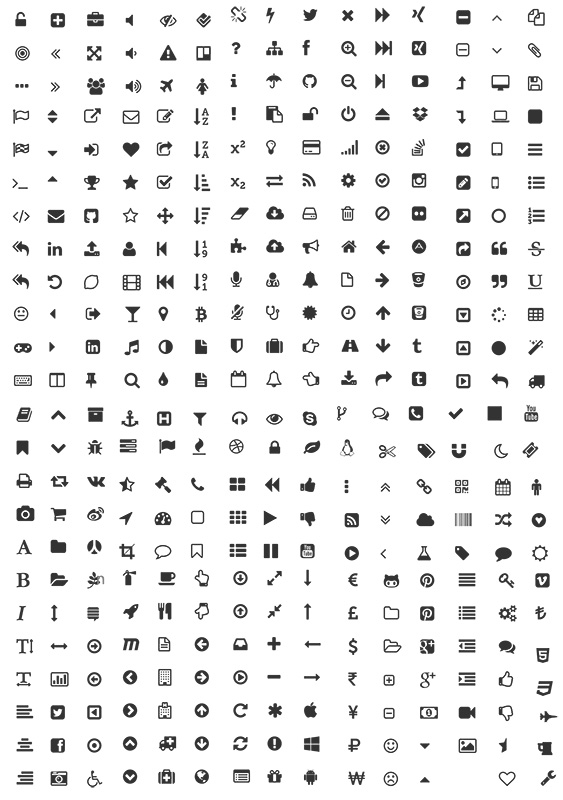
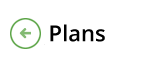

There are a number of icons used throught the Greenlight products. These are used to convey meaning quickly. There are many throughout the web applications, particularly the mobile applications where screen space is a premium.
Where possible we use Font Awesome for all icons. This enables us to be consistant and reduces the number of images and server calls. On older browsers an alt gif will need to be used.
We tend to use a free true type font for most of these. Font awesome.

This back button appears alongside the page title and is used to go back to a previous, higher level page.

This should be used as a date picker for forms, this should appear inside the input box to the right. See below.
(fa-calendar)
See the Pen Icons by Greenlight Style Guide (@greenlightstyleguide) on CodePen.